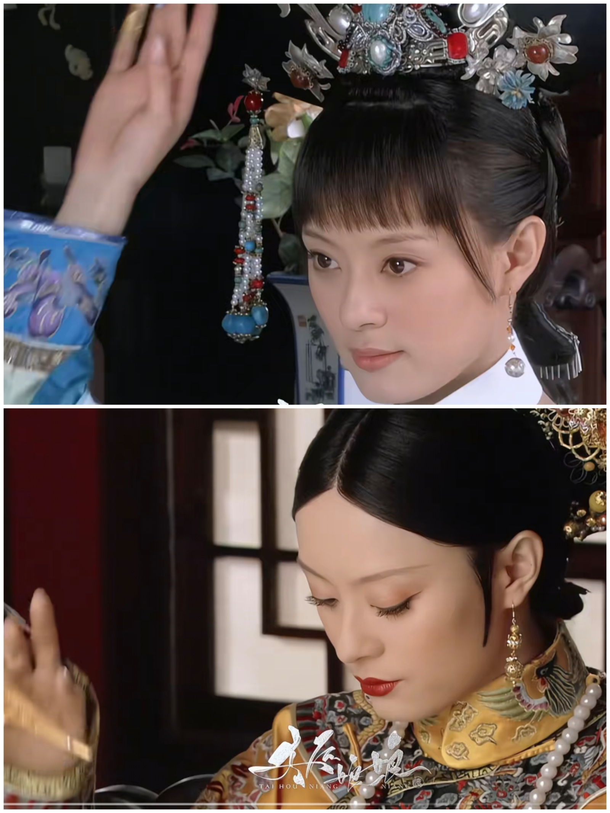
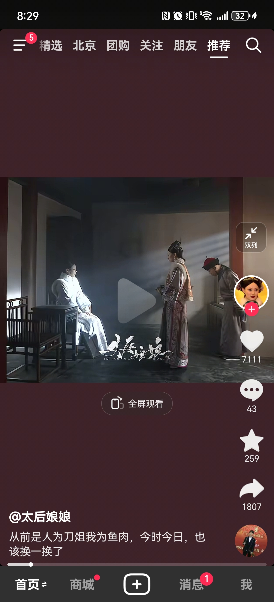
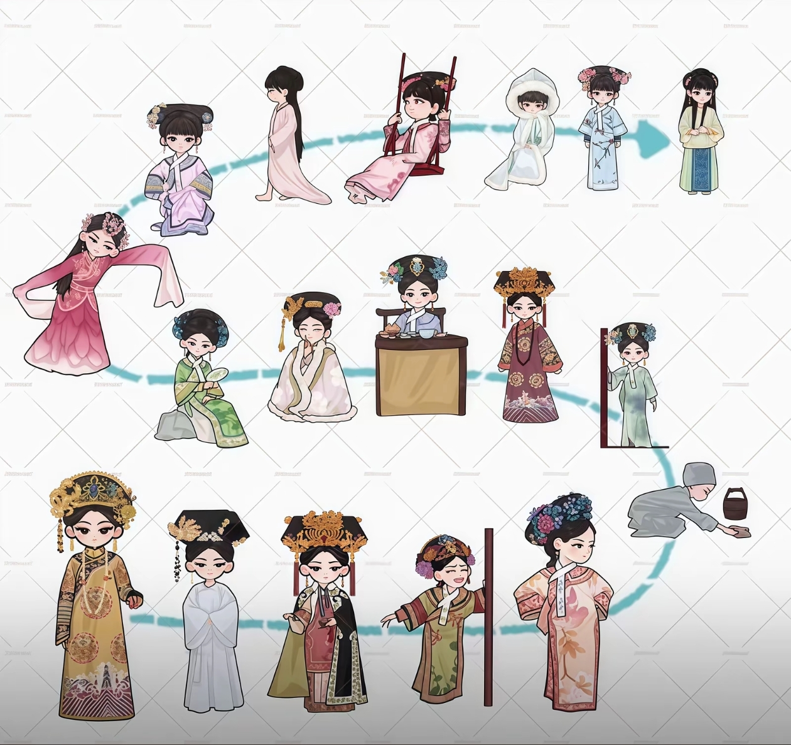
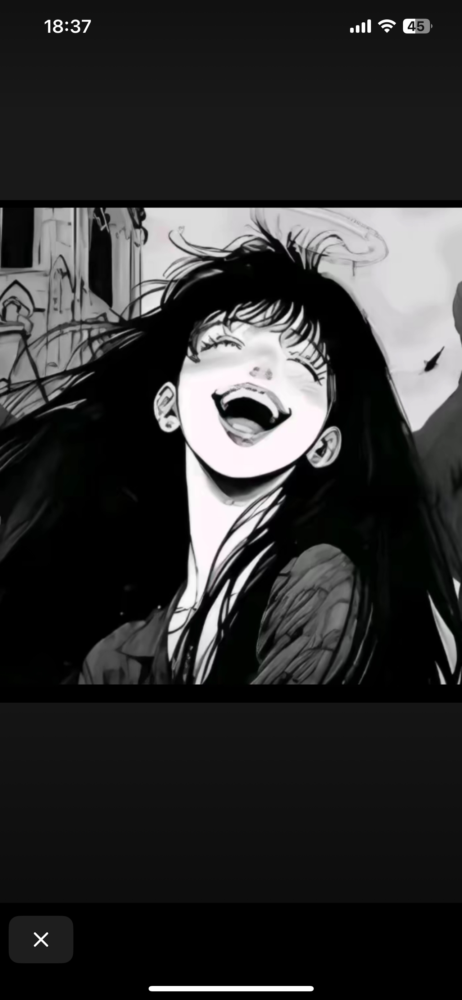
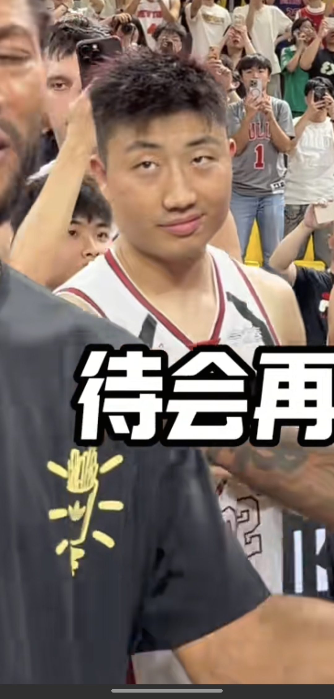

好像听出是女孩子的声音[看]
感觉这种声音好少见，主播加油[飞吻]
这才是掌上明珠
要是每天这样，等孩子二十多了还能这样，臂力就练好了！
那时候长这样
秋殇别恋谁听过 个人觉得最nb的网络歌曲[捂脸]
有谁记得《秋殇别恋》
萌萌哒天团[九转大肠]
高考压力大你就老实了[灵机一动]
之前不觉得，现在看了你的剪辑才觉得，甄嬛真的是皇帝一手调教出来的得意弟子。后期她身上那种气势和处事，和胖橘好像。
我不怎么喜欢宫斗题材 说实话我一直没去看过甄嬛传 都是看抖音剪的片段 这是第一次生出想去看的念头[流泪][流泪]
抬手臣妾，落手哀家[色] 
终于知道为什么这里面的孙俪更好看了，别的剧里面孙俪嘴唇下面都有一颗超大的黑痣 这里面没有
这么多甄嬛传剪辑，第一次被震撼[色]
四大爷的胡子，刚好是甄嬛的刘海[泪奔]
前一幕是甄嬛拜佛 下一个场景如果换成皇帝病重 众妃嫔叩拜甄嬛 听其训话那幕就更爽了[调皮][爱心]
跪下来求自己别看甄嬛传了，结果跪下来只能告发熹贵妃私通
甄嬛传真的太用心了，华妃都这样了，小顺子在后边还是恭顺弯腰，即使不是给华妃行礼，也是封建制度下下人不能抬头直视主子的礼仪尊卑。这种刻在骨子里的东西在大如传像儿戏，真是浪费那一票好演员 
有时候真想逼自己别在看甄嬛传了[流泪]
甄嬛看似赢了其实也是输了 因为她在意的人都离开她了 最后她只能守着回忆度日 虽然身处高位有着权势 正所谓高处不胜寒 王者最后都是孤独的
嬛嬛的一生[害羞] 
吾已阅，欲与妻看，然野猪灵智未启，不食细糠，遂作罢
不是吧 罗斯才240左右站摸啊[发呆]
猫：后宫咋啦？
皇上：风波不断！ 喵喵：什么？光速开饭？？？
猫:什么后宫之中吃个罐罐
🐱：那橘猫又发什么癫
🐱：什么？后宫开饭？
你怎么知道他要吓一跳[泪奔][泪奔][泪奔]
猫：皇上，不是我，我在睡觉
这种感觉！ 
这次降调啦哈哈哈哈哈哈
在我国的法律日益完善的如今，仍有不法分子利用网络报复社会
狗子:“日子怎么可能跟谁过都一样呢”
他有狗子有爱他的妻子，真的很幸福了[流泪]
待会给你电话号码，一会吧，客套话，再也没有机会
大N:你俩关系很好啊 
很多人说威姆斯不认识罗斯 我笑了 人家早在NBA就认识了[捂脸]
我就说周日不能醒太早
所以全球气候变暖不是我造成的[微笑]
那他们吃饭也用手抓吗
贵州山楂树很少，但是花椒树很多
140一瓶，必须到指定的地点充，有便宜的不允许，私人不可以充，由专门的人去充。
我还有事 我先走了
狗也会觉得尴尬哈哈哈哈
狗：帮我订回日本的机票
狗:不就摔了一下没事 晚上:真该死啊，怎么摔了啊[流泪]真丢撵
大哥 我驼背能不能给我干直溜
叫气象局朝天上打两炮就行了[赞][赞][赞]
“最真诚的不是爱，而是沉默的孤单”
给小小的劳资唱哭了
一直以为他是演员，没想到本职是歌手[捂脸]后面才知道听过他的好多歌[震惊]
不敢相信这是她[九转大肠]
雷总自从出苏7出事情后就没更新了，雷总算是看清了互联网了[捂脸]
看看百度副总裁的女儿，雷总真的是给脸给你们给多了[泪奔][泪奔][泪奔]
假米粉:小米汽车销量腰斩，车卖不动了。真米粉:那我提车的时间是不是可以提前了？
雷总也算是认清这个互联网了
销量腰斩大概率不是因为这个事故。 好多人都是在准备抢YU7了[看][看][看]
你们没有练过狙击步枪的不知道，平时训练我们都是非常小的长宽20厘米的圆环靶子，300.400米你如果枪校正过，密位调整的好，300米距离不可能出靶的。我最高300米10发子弹92环，不过训练是训练，实战肯定不一样，心里素质非常重要，这位战友的一看就是部队转业的，非常厉害，而且用的后操枪稳定性非常牛逼。
感觉这个女孩子真的是无妄之灾啊[流泪]肯定要有阴影了子弹就穿过自己旁边的头顶血溅当场死亡[流泪]
果然很流畅啊，接广告都这么流畅[看]
这得多强大的心理素质才能打这么准，只露出半个头而且还紧紧贴着人质[流泪]
他穿着汗衫子大裤衩，还有点胖个嘟的，就像刚忙完大排档的烧烤老板赶过来一样，朴实无华的拎着突突枪，给对方喂了一粒枪子儿[宕机]
不是，他一心求死，就去死啊，劫持人质还要枪干什么[发怒]
狙击手穿这么随意 然后隔那么远精准打中了罪犯 太牛了[泣不成声]
能赔点女孩的心理损失费吗[捂脸]
狙击枪这个距离，我感觉不管歪没歪，被挟持的女子事后不找心理医生如果没疯她心理素质是这个👍🏻
想起之前有个父亲挟持自己的孩子，狙击枪也到位了，但是领导觉得父亲不会伤害自己的孩子，就让狙击手待命，然后那个孩子被父亲砍了，眼睛好像都摘掉了
冷知识，高精狙子弹跟大拇指一样粗，这个距离，前面一个小眼，后面直接轰烂了
确实，那些都是电影里的情节，喝水呀、换人质啊、女性送吃的啊……，一心求死的人真没法谈判。
什么时候男人才能放过陌生女性[绝望的凝视]陌生女性的尊严钱包人身安全等等所有的一切
当时我大一，就在学校附近的地铁发生的事，周六周日都不敢出校门[听歌]
狙击手一般不都是年轻，帅气，身材好的叔叔吗[干饭人]
天 这么近 人质看着自己旁边的人被爆头了 还感觉到子弹从自己旁边飞过 而且还是个女孩[泣不成声]
所以爆头时，墙，地面，人质身上都不会有歹徒血迹[发呆]
该表彰的不是这个狙击手吗
还是那句话喝多了有往女宿舍跑的没有往警察局跑的
谁都不认还认女生宿舍呢[尬笑]
哇塞，我开学都不知道女生宿舍在哪，你们学校把女生宿舍建成大门了吗？一闯就进去了？
建议开枪测试[愉快]，躲过去了没醉装醉枪毙，没躲过去下辈子注意点[愉快]
我朋友说，这个男的是1号宿管大姨对象，平时就住在女生宿舍！一个中年男的！住女宿！[憨笑]出事了他们校园圈被控评，不让传播说影响不好[憨笑][憨笑][憨笑]
我看过原视频：男的是一栋宿管阿姨的亲戚，一栋阿姨留他在女生宿舍201住宿，后面就是视频里的故事，被打的阿姨是二栋的宿管阿姨，旁边有个男老师还是保安旁观也不拦着[感谢][感谢][感谢]（原视频被删了[憨笑]）
所以说，应该关注的是，他是怎么在那么大的校园里，顺利无误的找到女生宿舍的[微笑]
如果酒精是伤害的借口，那么禁酒应该像禁毒一样禁止[愉快][比心]
酒是什么免死金牌吗
保安一直没来 保安来了以后看热闹[暗中观察][暗中观察][暗中观察]
如果喝了酒就增加人的犯罪率，那么酒精就应该像毒品一样被禁止[愉快][愉快][愉快][愉快]
必须支持死刑！！！！这样恶魔不能留在人间！！！
世界太多不平事，一言难尽，永远支持你[赞][赞][赞]
全国人民都看江西高院了
纯手环没有屏幕吗[发呆]
Read more: